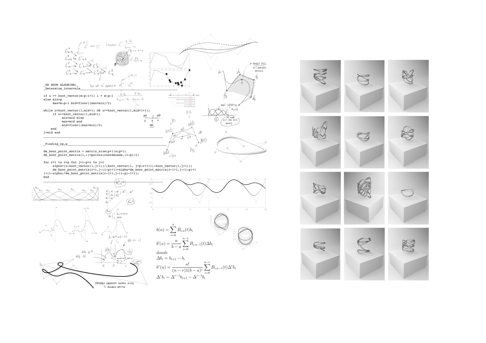

c2
WHEN? Spring 2018
WHO? Lorena Sanz, Tomás Cabezón
WHY? Parametric Design Studio
WHERE? 同济大学 Tongjji University
For the Parametric Design Class we were asked to design a building through coding in Maya program. My classmate Lorena and I focused on creating a code that would create building based on the area available and the population that would live on it.
With CylinderCube we wanted to create random forms based only on the area and population limitations, in order to scape from the overpopulation solution that we can see in many cities of repeating the same building several times.
There are infinite possibilities and universes in which this decision did not happen at all, as well as I am sure there are many others in which it also occurred. But if I had to point down a single event it would probably be how I realized AI was quickly taking over designers’ jobs, creating ads, banners… So I thought, how will designers face this new world where thousands of variants can be created with only one click?
Math can be the answer to this, the one that gives the input to generate these infinite possibilities if we integrate algorithms with the power of randomness. If creativity is imagining the impossible, why not have the infinite as the starting point?
XYU ring is not only an item but an infinite. This is not just a jewel, but as many as you want. This is not just a ring, it is an algorithm that designs them.